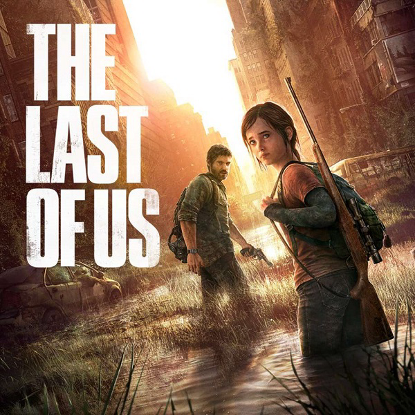

De longe, o melhor conteúdo inspirado em videogame já criado! O show mantém tudo ótimo do jogo enquanto adiciona um nível de satisfação cinematográfica a cada segundo dele ... Pedro Pascal faz um trabalho incrível como Joel. Seu desempenho é convincente e cheio de camadas, mal posso esperar para ver como ele mergulha em outras partes da jornada de Joel. Gabriel Luna rouba a cena em todas as cenas em que está, seu sotaque, a linguagem corporal, é tudo muito bom! E Bella Ramsey arrasa como Ellie, sua Ellie é esperta, rápida com as palavras e com a faca! Seu desempenho é talvez um dos melhores que você já viu. A direção e a escrita são do mais alto nível possível, as cenas parecem envolventes mesmo quando pouca ação está acontecendo e os personagens parecem familiares mesmo à primeira vista ... os escritores capturaram o tom perfeitamente e o design do cenário implementa esse mesmo tom em todas as cenas . Para resumir tudo, The Last of Us da HBO é uma excelente peça de televisão que permanece fiel à sua fonte, mas mantém os fãs veteranos em alerta com mudanças respeitosas na história. he Last of Us, ganhador de mais de 200 prêmios 'Jogo do Ano', ganha versão remasterizada para o PlayStation®4. Agora com modelos de personagens em alta resolução, sombras e luzes aprimoradas e outras melhorias no jogo. Cidades abandonadas retomadas pela natureza. Uma população dizimada por uma praga moderna. Os sobreviventes matam uns aos outros por comida, armas e qualquer outra coisa em que puderem botar as mãos. Joel, um sobrevivente brutal, e Ellie, uma adolescente corajosa e madura apesar da pouca idade, devem unir forças para saírem vivos da sua jornada pelos Estados Unidos. The Last Of Us: A versão remasterizada inclui pacotes com mapas de territórios abandonados, territórios recuperados e a campanha para um jogador The Last of Us: Left Behind, que foi aclamada pela crítica e combina temas se sobrevivência, lealdade e amor com um jogo intenso com sobreviventes em ação.